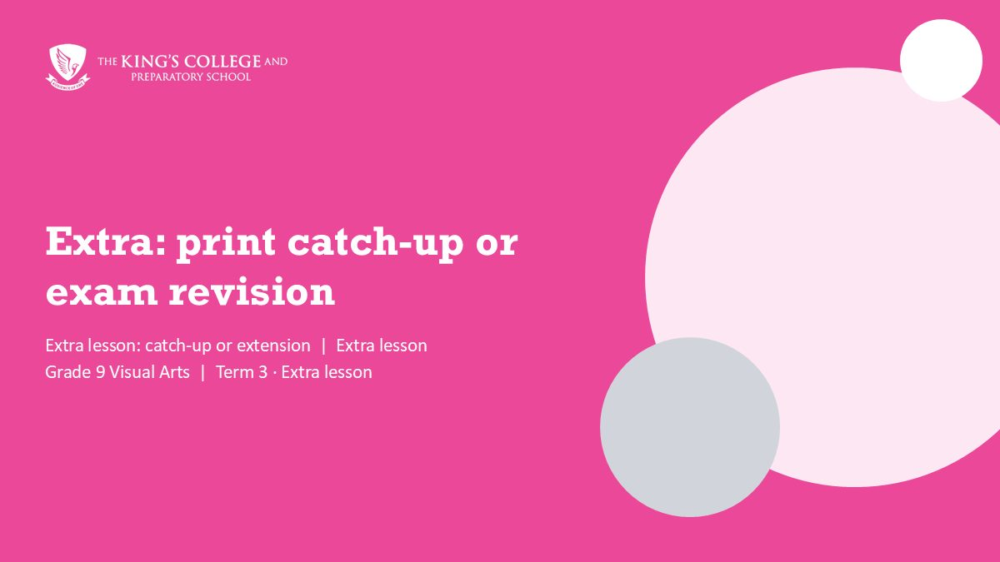

Term 3 · Extra lesson · Extra lesson: catch-up
Extra: print catch-up or exam revision
Start here
Today I will
- Finish my edition or improve my prints
- Revise vocabulary, visual analysis and perspective
- Be ready for the year-end exam
Think first
Are you printing or revising today? Write one goal for this lesson.
Words to Know
| Word | Meaning |
|---|---|
| Edition | A set of identical prints from one block. |
| Registration | Lining up block and paper the same way every time. |
| Visual analysis | Writing about an artwork in five levels. |
| Artist's proof (A/P) | A print outside the numbered edition. |
Slides

Notes
Catch-up.
Two tracks today
| Printing track | Revision track |
|---|---|
| Correct the block if needed (bench hook, cut away from you, hand behind the blade). | Learn ten vocabulary words with a partner. |
| Print until you have three to five matching prints. | Write a five-level analysis of a Sekoto or Muafangejo artwork. |
| Sign and number in pencil. | Practise a one-point perspective box and corridor. |
Revising well in 40 minutes
- Test yourself first: Cover the meanings and say them aloud; tick the ones you know.
- Work on the gaps: Spend most of the time on what you got wrong.
- Practise, do not reread: Write an answer or draw a perspective box instead of only reading notes.
- Check: Mark yourself against the Handbook or memo.
Remember
Finish strong: one more print, one more word learnt.
Practical
You need: Lino equipment, Handbook, Activity Book, visual journal
Print catch-up or exam revision
- Choose your track and write your goal.
- Printing: correct, ink, register, print and sign.
- Revision: vocabulary, a timed analysis and a one-point perspective drawing.
- Check your goal at the end of the lesson.
Test yourself
- Did you reach your goal?
- What does A/P mean on a print?
- Which level of analysis comes after content?
Show answers
1. Own answer. 2. Artist's proof: a print outside the numbered edition. 3. Context (zeitgeist).
Finished early?
Quick revision card
Make a revision card for the year-end exam.
- Fold a visual journal page into four sections.
- Section 1: draw a one-point perspective box and label the horizon line, VP and orthogonals.
- Section 2: list the five levels of analysis in order.
- Section 3: write five vocabulary words with short meanings.
- Section 4: write how to sign and number a print.